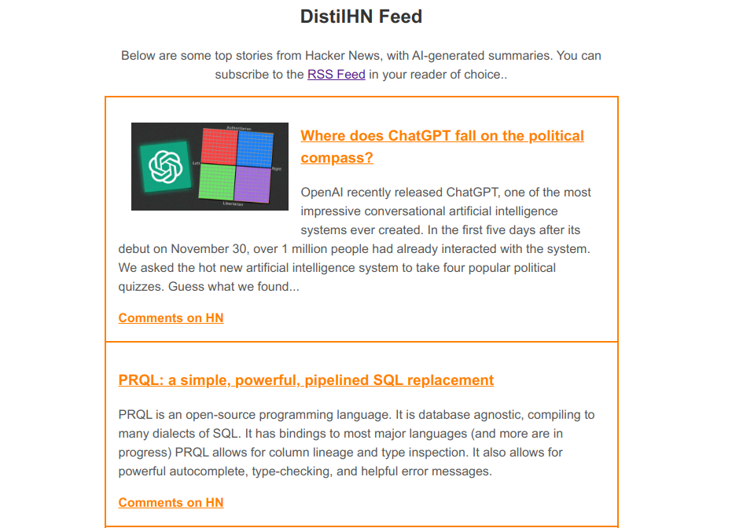
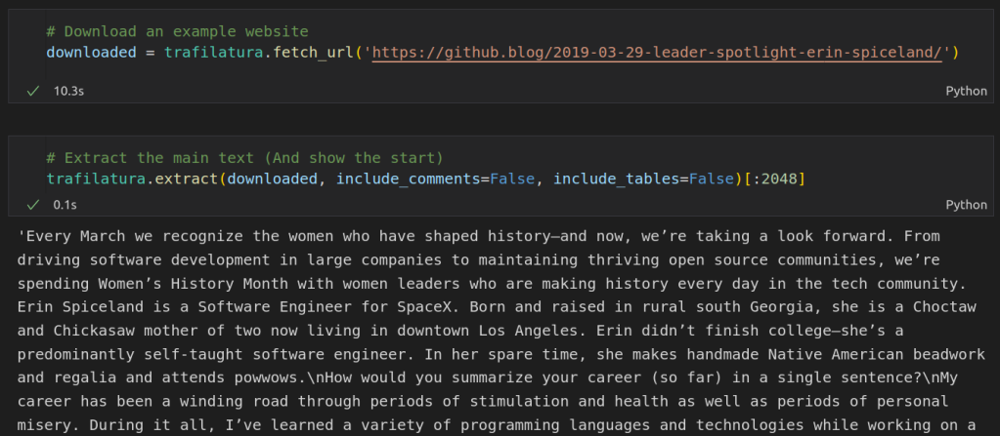
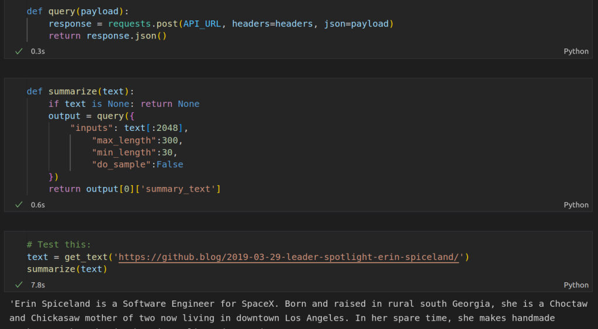

DistilHN: Summarizing News Articles with Transformers
https://youtu.be/TBqzMfWpQrs
In this series, I’d like to explore how to take an idea within machine learning from proof of concept to production. This first post is going to get things going with a little mini-project that I did in the downtime between Christmas activities, creating a website called DistilHN.com using a bit of machine learning magic and some basic web scraping. Let’s get started.

The DistilHN page
The Idea

I’ve been thinking about how to make a better news feed. When confronted with a clickbait headline, I often want a little more info, but don’t feel like clicking through to the article (and dismissing the cookie popup, and scrolling past the ads, and declining their invite to sign up for the newsletter, and …) just to see what it’s about. So, this is the idea: use AI to generate a short summary that you can read before deciding whether you’re going to commit to the full article or just skip straight to the comments section on Hacker News.
Scraping Text
I started working on a way to get the main text from an arbitrary website using Beautiful Soup, writing heuristics for which elements were worth including or ignoring. It turns out this is a very hard problem! After a while I had something that sort of worked for some sites, but in desperation I decided to take another look around online to see if someone else had already done the hard work.

Extracting text from a website using Trafiltura
Enter the Trafilatura library, purpose-built for this exact task! It makes it super easy to grab the text from any website, as shown in the screenshot above. Aside: all the code shown in this post is also available as a notebook on Google Colab here.
Summarization
For the actual summarization step, I choose to use this model from Facebook which was fine-tuned for news article summarization. You can run it locally with a huggingface pipeline, but I chose to use the free inference API since we’re not going to need to run this thousands of times an hour and we may as well do as little work as possible ourselves! We set up a query, specify the text we want to summarize and the min and max length for the summary, post the request and wait for the summary back.

Summarizing the text with the HuggingFace Inference API
This was a bit of a revelation for me. In the past I’d be downloading and training models as soon as I started a project like this, but here is an existing solution that does the job perfectly. If we want to scale up, Huggingface has paid inference options or we can switch to running the model ourselves. But for this proof-of-concept, the inference API makes our lives easy :)
Taking This Further
You can see the final website at https://www.distilhn.com/. I’m quite pleased with how it turned out, even if there are still a few things to iron out. I’m already working on a more ambitious follow-on project, pulling news from across the globe and filtering it using more ML magic… but that will have to wait for a future post :) Until then, have fun with the website, and let me know if you have ideas for improvements! Happy hacking.